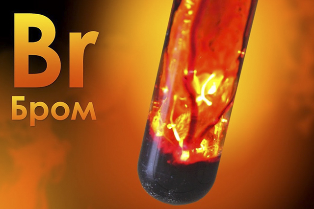
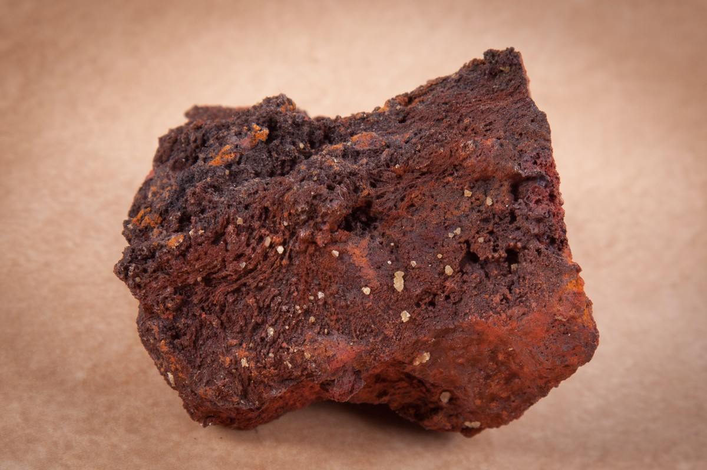
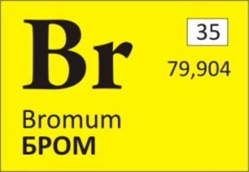

Бром
Бром (химический символ — Br, от др.-греч. βρῶμος — «зловонный», также от лат. Bromum) — химический элемент 17-й группы (по устаревшей классификации — главной подгруппы седьмой группы, VIIA) четвёртого периода периодической системы химических элементов Д. И. Менделеева, с атомным номером 35.

Бром был открыт двадцатичетырехлетним лаборантом Антуаном-Жеромом Баларом. Балар изучал маточные рассолы южных соляных болот Франции. Во время одного из опытов, когда он подействовал на рассол хлором, он заметил появление весьма интенсивной желтой окраски, вызванной реакцией взаимодействия содержащегося в растворе бромида натрия с хлором. Через несколько лет напряженной работы Балар выделил необходимое количество темно-бурой жидкости, названной им муридом. В Парижской Академии наук Гей-Люссак и Тенар подтвердили открытие Баларом нового простого вещества, но нашли название неудачным и предложили свое - "бром", что в переводе с греческого означало зловонный. Впоследствии французский химик Шарль Жерар, не получивший кафедру химии во Французском колледже, которую передали Балару, высоко оценив открытие им брома, не смог удержаться от резкого восклицания : "Это не Балар открыт бром, а бром открыл Балара!"

Бром добывают хлорированием рапы — сильно концентрированной морской воды. Годовой объем производства составляет около полумиллиона тонн, а лидируют в нем США, Израиль, КНР и Иордания. Вообще же бром — весьма рассеянный элемент, практически не имеющий минералов. Это неудивительно, ведь большинство его собственных соединений растворимы, а размер атома так велик, что он не помещается в решетки других элементов. Именно поэтому морская вода — наиболее доступный его источник. Соответственно, больше всего брома содержится в водорослях и других морских организмах.

Бром в виде полибромдифенолов, их эфиров и схожих соединений оказался прекрасным гасителем пламени, способным хорошо смешиваться с полимерами. При горении такие соединения легко превращаются в бромоводород — HBr. Он реагирует со свободными радикалами водорода, кислорода или гидроксигруппы и нейтрализует их, то есть обрывает цепную реакцию, обеспечивающую горение. Такие добавки особенно популярны при производстве пластиков для изготовления электронных плат, но и многие другие материалы содержат эти вещества.